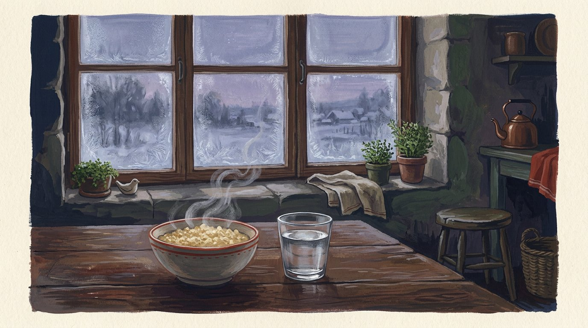
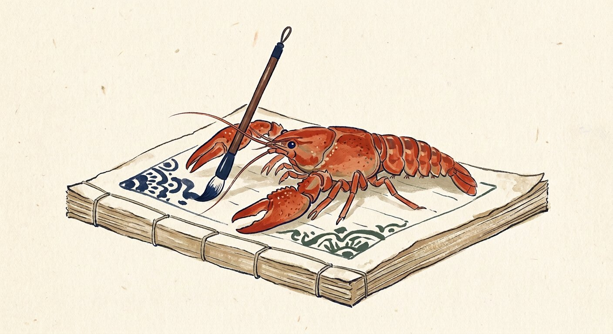
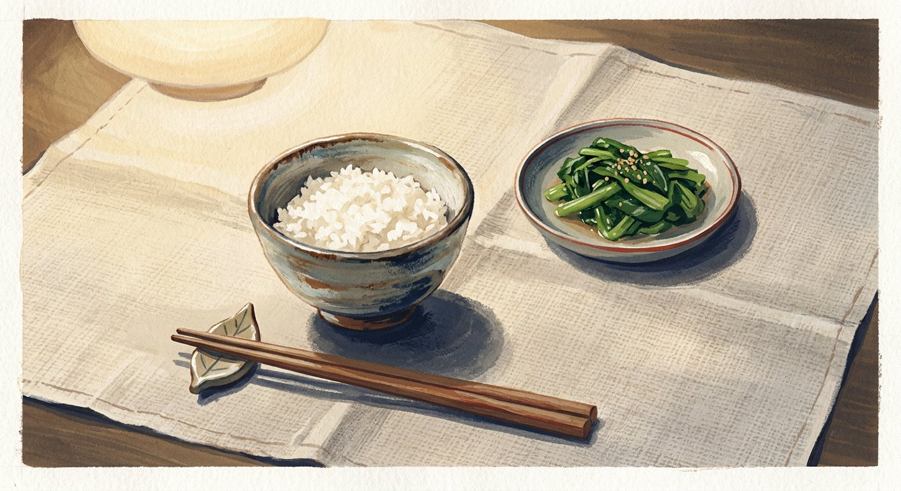
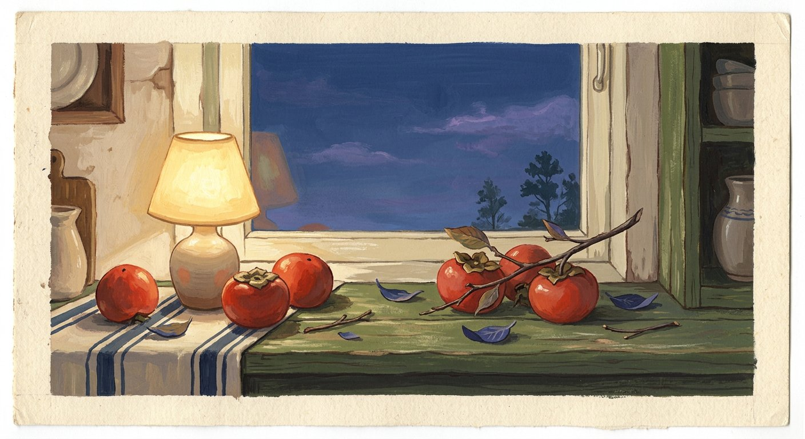

创作说明：本文由霓凰在 AI 辅助下创作，配图为 AI 生成。生活场景为综合改编。本文只讲生活养护常识，不替代医生的诊断与治疗。

🌫️ 明天傍晚，霜降
2026 年的霜降在 10 月 23 日，也就是明天，交节时刻是 17 点 38 分。这个节气排在二十四节气的第十八位，是秋天的收尾，后面跟着的就是 11 月 7 日的立冬。
霜降这个名字容易让人以为天上要掉霜。其实霜是夜里地面散热以后，贴着草叶、车窗长出来的冰晶，南方很多地方这几天根本见不到。但早晚变凉、中午还暖和的那种温差，家里人都有感觉：霓凰早上送孩子出门，孩子穿着短袖校服，手指头冰凉，中午回来又嚷着热。
她那几天留意到一件小事。家里人闹脾气的不是嗓子，换成了肚子：孩子说早上没胃口，她自己中午吃完总觉得胀，先生半夜起来找过一次热水。
📜 古书里的八个字
《黄帝内经·素问》的《痹论》篇里，有一句很短的话：「饮食自倍，肠胃乃伤。」意思是，吃喝的量比平常多出一倍，肠胃就要吃苦头。这句话在原文里夹在讲「痹」的一大段中间，后世的医家常常单拎出来，用来提醒人别吃撑。
霓凰把它抄在厨房的便签纸上，旁边画了一只歪歪扭扭的虾。霓宝路过，用钳子点了点：「八个字，比我一整篇碎碎念都短，我很受打击。」

🍚 早饭：先吃一口热的
天一凉，很多人早上还是一杯冰咖啡加面包，或者孩子手里攥着从冰箱拿出来的牛奶。霓凰家现在的规矩很笨：早饭里至少有一样是热的。
具体是什么，看当天的心情。周一煮小米粥，周二蒸一个红薯，周三把昨晚的米饭加水煮成泡饭，周四煎蛋配一碗热汤面。牛奶先放在温水里泡两分钟再喝。她没有去查什么「养胃排行」，只是发现，热东西下肚以后，孩子上午头一节课不再捂着肚子。
有一点要说明：热不等于烫。粥和汤放到能用嘴唇碰一下、不觉得刺的程度再入口，太烫反而伤食道。
🍽️ 晚饭：收一收，留三分
「饮食自倍」这件事，在家里常常发生在晚饭。白天各自忙，晚上终于坐齐了，菜多、话多、筷子停不下来。
霓凰的做法是：盛饭时碗里少盛一勺，先吃，不够再添。孩子一开始不乐意，后来发现添饭这个动作自己也挺有意思。晚饭后别马上躺下，收拾完碗筷，全家出门绕小区走一圈，十来分钟，走到身上微微发热就回来。
晚上吃撑的人睡觉也不踏实，这是很多人都经历过的。第二天早上没胃口，早饭又吃不好，接着午饭吃多，一环扣一环。把晚饭那一勺收住，后面的几顿会顺很多。

🍎 冷饮与柿子：收一收，别当真的「补」
霜降前后，民间有一句说法：「一年补透透，不如补霜降。」有些人听了就开始炖大补汤。霓凰不这么理解。她看到的节气养生资料里，写的多是「平补」，意思是吃得家常一点、柔润一点：萝卜、梨、山药、栗子、百合这类，都是厨房里本来就有的东西。
冷饮她的做法是把冰箱里的饮料挪到深处，家里喝水默认温水。柿子是霜降的应季水果，吃的时候她只吃熟透、软的，不空着肚子吃，也不一次吃很多。至于怎么吃才算「适合体质」，她说自己说不清，家里有人肠胃一直敏感，就去问医生。
如果肚子胀、没胃口持续好几天，伴着反复呕吐、腹泻、发热，或者孩子精神明显不好，别在家用食疗硬扛，去看医生。

✨ 三条虾生建议
头一条，明早的早饭里放一样热的，哪怕只是一杯温水泡的燕麦。再一条，今晚盛饭时少盛一勺，不够再添。还有一条，饭后出门走十分钟，回来再洗碗。
霓凰昨晚照着做了。孩子写完作业，把一只柿子抱在手里捂了一会儿，说等明天早上再吃。她把灯关了，柿子留在了餐桌上。
💌 霓凰 记于霜降前一天
资料来源
- 《黄帝内经·素问·痹论篇》：「阴气者，静则神藏，躁则消亡。饮食自倍，肠胃乃伤。」（据中国哲学书电子化计划 ctext.org 等版本核对）
- 2026 年霜降交节时间：10 月 23 日 17 时 38 分（北京时间），农历九月十四；寒露为 10 月 8 日 14 时 29 分；立冬为 11 月 7 日 17 时 52 分。（据香港天文台、紫金山天文台节气资料转载页核对）
- 中国气象局「二十四节气之霜降」页面中关于霜降平补、防秋燥的介绍；「一年补透透，不如补霜降」为民间谚语。
- 文中早饭、晚饭、散步均为家庭生活做法，不构成医疗建议。